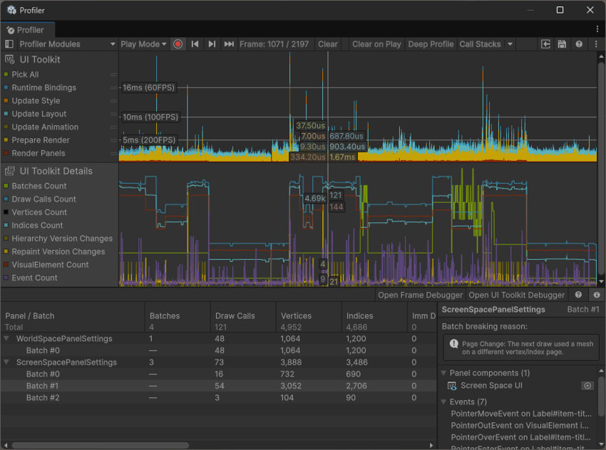
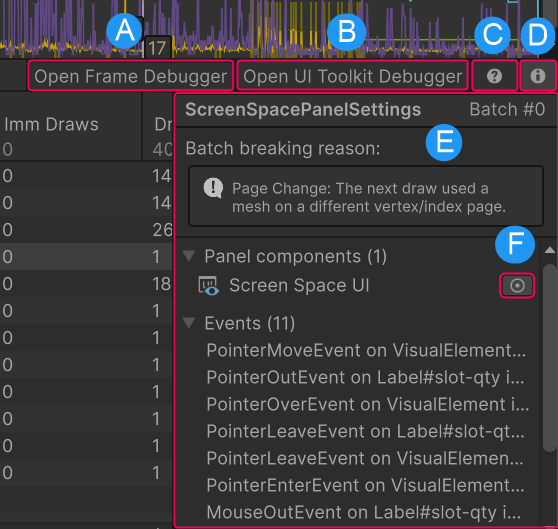

The UI Toolkit Details profiler module collects data about the work your application performs to render and update your UI.
Use the module to identify performance bottlenecks and optimize your UI elements.
You can profile UI for Edit mode, Play mode, and player builds on devices. The profiler’s Play mode captures only in-game UI, while Edit mode captures Unity Editor UI and in-game UI running in the Game view. For more information on profiling, refer to Collecting performance data.
To open the Profiler window, go to Window > Analysis > Profiler. For more information, refer to Unity Profiler.

The UI Toolkit Details profiler module contains the following charts. Each chart plots one value per frame:
| Chart | Description |
|---|---|
| Batches Count | Number of batches rendered. |
| Draw Calls Count | Number of draw calls. |
| Vertices Count | Number of vertices. |
| Indices Count | Number of indices. |
| Hierarchy Changes | Number of hierarchy changes for all panels. For example, adding, removing, or reparenting of visual elements. |
| Panel Changes | Number of changes to visual elements for all panels. For example, style, layout, transform, or hierarchy changes. |
| Visual Element Count | Number of visual elements in all panels. |
| Event Count | Number of events dispatched on all panels. For example, pointer, keyboard, or navigation. |
A change is any modification that flags a visual element for its panel to reprocess, such as a style, layout, transform, or hierarchy change. Panels process these changes in a deferred pass, which can itself produce more changes.
For example, the Panel Changes value is the number of changes accumulated since the panel last updated its rendering data. Updating rendering data isn’t the same as rendering a frame: a panel can render multiple frames without updating its data, or update its data multiple times between renders.
Because the deferred pass can itself produce changes, a single user action can register as several.
Select this module in the Profiler window to view the data. Select a point on the chart to view the data for that frame in the details pane in the bottom half of the window.
For each panel or batch, the details pane displays the chart data along with the following:
| Data | Description |
|---|---|
| Panel / Batch | The panel name or batch number. For runtime UI, the panel name is the Panel Settings asset name. For Editor UI, the panel name is the EditorWindow name. |
| Batches | Number of batches emitted by this panel during the render pass. |
| Draw Calls | Number of Draw commands processed. |
| Vertices | Number of vertices referenced by Draw commands. |
| Indices | Number of indices submitted by Draw commands. |
| Immediate Draws | Number of immediate-mode draws. |
| Draw Ranges | Number of contiguous draw ranges stashed before each batch is broken. |
| Breaking Reason | Reason why the renderer broke this batch instead of continuing to grow it. |
| Owner | Panel component that owned the render chain when the batch was broken. |
| Hierarchy Changes | Number of hierarchy changes on this panel in the frame. For example, adding, removing, or reparenting of visual elements. |
| Panel Changes | Number of changes to visual elements on this panel in the frame. For example, style, layout, transform, or hierarchy changes. |
| Visual Elements | Number of visual elements in this panel’s hierarchy. |
| Events | Number of events dispatched on this panel. |
The UI Toolkit profiler modules display the following additional controls:

Select a panel to view the count of each batch breaking reason for this frame.
Select a batch to view more information about the batch breaking reason.
The following batch breaking reasons are possible: